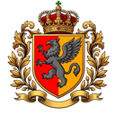

Vermindor — największy, od prawej krawędzi, podłużny w lewo. Multikonia — pod nim, pozioma.
Mythandria — najdalej na zachód, podłużna z północy na południe.

Wielka Encyklopedia Uniwersum Felorostu Interaktywna mapa świata